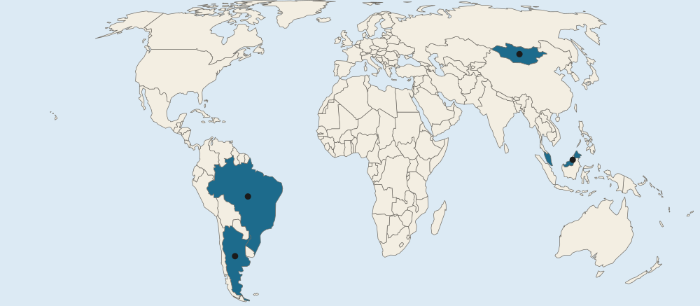

Introduction to Agriculture
Agriculture is the purposeful raising of crops and animals.
Part 1 · Hook
Why this matters
Part 2 · Prerequisite check
Quick check before you start
1. Carrying capacity is best described as what?
- The number of people an area can support without damaging it
- The number of people per square kilometer of land
- The share of land that can be farmed
- The number of farmers per square kilometer of farmland
Show the answer
Carrying capacity is how many people an environment can support sustainably. People per area is population density.
- Correct: The number of people an area can support without damaging it:
- The number of people per square kilometer of land:
- The share of land that can be farmed:
- The number of farmers per square kilometer of farmland:
2. Farmers in a desert use canals to grow crops. Which idea does this example fit?
- Possibilism
- Environmental determinism
- Distance decay
- Relocation diffusion
Show the answer
Possibilism says the environment sets limits, but people choose how to respond, for example with technology.
- Correct: Possibilism:
- Environmental determinism:
- Distance decay:
- Relocation diffusion:
Part 3 · See it
See it first

Part 4 · Step by step
How it works, step by step
- A place has a dry climate with too little rain for most cropspeople raise animals that can graze its grass
- The grass in one spot runs out in the dry seasonherders move their animals to fresh pasture
- Each herd needs a very large area and few other inputsnomadic herding is a form of extensive agriculture
Part 5 · Key ideas
Key ideas
- Intensive agriculture puts many inputs (labor, money, machines, water, fertilizer) into each hectare; extensive agriculture spreads few inputs over large areas. Judge by inputs per hectare, not farm size.
- Extensive kinds: shifting cultivation (Amazon basin), nomadic herding (Mongolia, the Sahel), ranching (the Pampas of Argentina).
- Intensive kinds: market gardening (near Rotterdam), plantation agriculture (oil palm in Malaysia), mixed crop and livestock farming (Iowa).
- Climate shapes farming: rainforest plots and plantations in the tropics, herding in dry lands, olives and grapes in Mediterranean climates. Irrigation lets people farm dry places intensively.
Part 6 · Misconception
A common mistake
The wrong idea: Intensive agriculture means a very large farm.
What actually happens: Intensive means many inputs on each hectare. A huge ranch is extensive; a small greenhouse is intensive.
Part 7 · Check yourself
Check yourself
Exam-style questions. Anything you miss goes into your review queue.
Map
Four countries and the farming common in parts of them

- Countries in the questions
1. Which letter marks a country where many families move herds of sheep, goats, horses and yaks across dry grasslands with the seasons?
- A
- B
- C
- D
Show the answer
Nomadic herding fits dry grasslands too dry for crops. The letter in East Asia, A, marks Mongolia, where herders move animals to fresh grass with the seasons.
- Correct: A: Right: A marks Mongolia, in East Asia, where nomadic herding on dry grasslands is common.
- B: B marks Brazil. Its Amazon rainforest is better known for shifting cultivation, not herds moving across dry grassland.
- C: C marks Malaysia, a hot, wet country known for oil palm plantations, not herding.
- D: D marks Argentina. It has grasslands, but cattle there are mostly raised on fenced ranches that stay in one place.
2. In the Amazon rainforest of one marked country, farmers clear a small plot, grow crops for a few years, then let the forest grow back while they farm a new plot. Which letter is that country?
- A
- B
- C
- D
Show the answer
The farming described is shifting cultivation, an extensive system of tropical rainforests. The Amazon rainforest lies mostly in Brazil, marked B.
- A: A marks Mongolia: its dry grasslands support herding, not cleared rainforest plots.
- Correct: B: Right: B marks Brazil, and the Amazon rainforest is a region where shifting cultivation is practiced.
- C: C marks Malaysia, which has rainforest (and some shifting cultivation on Borneo), but the Amazon is in South America, not Southeast Asia.
- D: D marks Argentina, whose temperate grasslands (the Pampas) are used for ranching and grain, not rainforest plots.
3. Compare the farming common in the countries marked A and D. Which statement is accurate?
- Both grow tree crops on big estates, but A uses more workers per hectare
- A farms land intensively, while D farms the same amount of land extensively
- Both clear forest plots and leave them to recover for years, but A moves more often
- Both use large areas for livestock, but herds in A move while D's ranches stay put
Show the answer
A compare speaks of both sides. Mongolia, marked A, and Argentina, marked D, both use huge areas with few inputs per hectare to raise livestock, so both are extensive. They differ in movement: nomadic herders move; ranchers raise animals on fixed land.
- Both grow tree crops on big estates, but A uses more workers per hectare: Tree crops on big estates describe plantation agriculture, as in Malaysia, not Mongolia or Argentina.
- A farms land intensively, while D farms the same amount of land extensively: Herding in A uses very few inputs per hectare, so it is extensive, not intensive.
- Both clear forest plots and leave them to recover for years, but A moves more often: Clearing plots and letting them recover is shifting cultivation, found in rainforests such as Brazil's.
- Correct: Both use large areas for livestock, but herds in A move while D's ranches stay put: Right: both are extensive livestock systems; herders in Mongolia move with their animals, while ranchers in Argentina keep cattle on fixed, fenced land.
4. Which of these are extensive kinds of agriculture? Select all that apply.
- Nomadic herding in Mongolia
- Ranching on the Pampas of Argentina
- Market gardening near Rotterdam, Netherlands
- Oil palm plantations in Malaysia
- Mixed crop and livestock farming in Iowa
Show the answer
Shifting cultivation, nomadic herding and ranching are the extensive systems: much land, few inputs per hectare.
- Correct: Nomadic herding in Mongolia: Right: herders use huge areas of grassland with few inputs per hectare.
- Correct: Ranching on the Pampas of Argentina: Right: cattle graze large fenced areas with little labor per hectare.
- Market gardening near Rotterdam, Netherlands: Greenhouse vegetables use much labor, heat and fertilizer on small plots: intensive.
- Oil palm plantations in Malaysia: Plantations use many workers and much money on each hectare: intensive.
- Mixed crop and livestock farming in Iowa: Corn Belt farms put machines, seed and fertilizer into every hectare: intensive.
5. In the Imperial Valley of California, a desert, farmers grow lettuce and vegetables on the same fields year after year. What best explains how desert land became intensive farmland?
- Irrigation water brought by canal from the Colorado River
- Herds moving with the seasons to find new grass and water
- Letting fields rest for years so the soil recovers
- Heavy summer rain from tropical storms
Show the answer
Irrigation is the human supply of water to crops. It lets dry places, such as the Imperial Valley in California, be farmed intensively, a sign of possibilism: people use technology to work around the environment.
- Correct: Irrigation water brought by canal from the Colorado River: Right: irrigation supplies the water rain does not, so farmers can put many inputs into each hectare.
- Herds moving with the seasons to find new grass and water: Moving herds describes nomadic herding, an extensive use of dry land.
- Letting fields rest for years so the soil recovers: Long rest periods describe shifting cultivation and lower the use of each hectare.
- Heavy summer rain from tropical storms: The Imperial Valley gets very little rain; that is why it needs canals.
6. At the global scale, nomadic herding is common in a dry belt from North Africa through Southwest Asia to Mongolia. What does this pattern suggest about why people choose herding?
- Herding spreads to the places where farmland is most expensive
- Herding is found where heavy rain falls year-round
- Land too dry for most crops can still feed grazing animals
- Herding is found mostly beside large cities
Show the answer
Climate shapes the pattern. The dry belt from the Sahara to the Gobi has too little rain for most crops, so herding animals that move to new grass is a way of using it.
- Herding spreads to the places where farmland is most expensive: Dry grasslands are among the cheapest land, which suits a system using so much of it.
- Herding is found where heavy rain falls year-round: Year-round heavy rain describes rainforests, used for shifting cultivation and plantations.
- Correct: Land too dry for most crops can still feed grazing animals: Right: where rain is too low and uncertain for crops, moving animals to grass is a way to farm the land.
- Herding is found mostly beside large cities: Herds need huge areas, far from crowded places.
Part 8 · Summary
Summary
Part 9 · Up next
What comes next
Part 10 · Connections